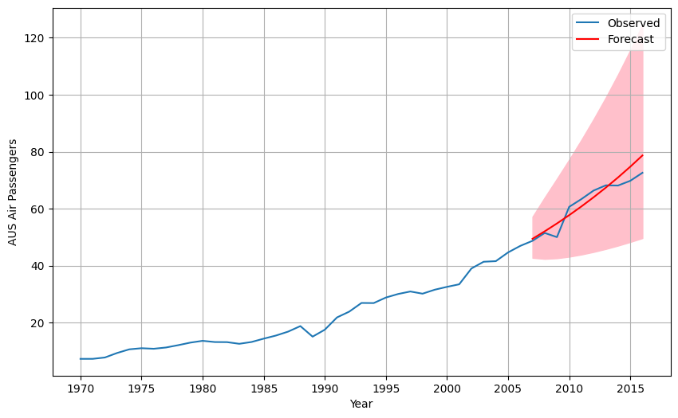

HA Chapter 9: ARIMA Models
Exercise 1
Figure 9.32 shows the ACFs for 36 random numbers, 360 random numbers and 1,000 random numbers.
- Explain the differences among these figures. Do they all indicate that the data are white noise?
All three ACF plots indicates white noise because there are not significant autocorrelation in any of the plots. The main difference among the plots is the data size begining with 36 number on the left plot then 360 numbers in the middle and 1000 numbers in the right plot. As the data set size get larger the narrower the significant boundaries become because with more data the ACF becomes more precise and random datapoints have less influence, leading to a narrower boundaries.
- Why are the critical values at different distances from the mean of zero? Why are the autocorrelations different in each figure when they each refer to white noise?
The critical values are different because of the size of the data as more data is available lower the critical values are. As for why the autocorrelations are different is due to the random fluctuations in the data. With a smaller data size these random fluctuations have a relatively larger impact on the ACF compared to a larger data size. That is why the correlation magnitudes on the left plot is larger compared to the rest since it has the smallest data size.
Exercise 2
A classic example of a non-stationary series are stock prices. Plot the daily closing prices for Amazon stock (contained in gafa_stock), along with the ACF and PACF. Explain how each plot shows that the series is non-stationary and should be differenced.
stocks = pd.read_csv('https://raw.githubusercontent.com/NickAMC/NickAMC.github.io/main/DATA_624_S24/rdata/gafa_stock.csv', parse_dates= ['Date'], index_col='Date')
amazon = stocks.query('Symbol == "AMZN"')[['Close']]
amazon.plot()
plt.show()from statsmodels.graphics.tsaplots import plot_acf, plot_pacf
plot_acf (amazon, lags = 30) # chose 30 since its daily data. other choices were 7 or 14
plt.show()
plot_pacf(amazon, lags = 30)
plt.show()The ACF plot demonstrates non-stationarity in the amazon data. The slow decay of autocorrelation values as the lag approaches 30 indicates a dependence on past values. Additionally, the PACF shows multiple significant correlations beyond lag zero, indicative of significant correlations between lagged errors.
Exercise 3
For the following series, find an appropriate Box-Cox transformation and order of differencing in order to obtain stationary data.
a.Turkish GDP from global_economy.
from statsmodels.tsa.stattools import adfuller, kpss
# using the augmented dicky fuller test
def adfuller_test(series) :
result = adfuller(series)
print('ADF Statistic: %f' % result[0]) # the more negative this value is the more likely ts is stationary
print('p-value: %f' % result[1]) # if p-values is less than 0.05 we reject the null: ts is non-stationary
print('Critical Values:')
for key, value in result[4].items():
print('\t%s: %.3f' % (key, value))
print(f'Result: The series is {"not " if result[1] > 0.05 else ""}stationary')
def kpss_test(series, **kw):
statistic, p_value, n_lags, critical_values = kpss(series, **kw)
# Format Output
print(f'KPSS Statistic: {statistic}')
print(f'p-value: {p_value}')
print(f'num lags: {n_lags}')
print('Critial Values:')
for key, value in critical_values.items():
print(f' {key} : {value}')
print(f'Result: The series is {"not " if p_value < 0.05 else ""}stationary')ADF Statistic: 2.940485
p-value: 1.000000
Critical Values:
1%: -3.581
5%: -2.927
10%: -2.602
Result: The series is not stationary
KPSS Statistic: 1.0019195473013205
p-value: 0.01
num lags: 4
Critial Values:
10% : 0.347
5% : 0.463
2.5% : 0.574
1% : 0.739
Result: The series is not stationaryfrom scipy.stats import boxcox
gdp_boxcox, lmbda = boxcox(turkey_gdp['GDP'])
turkey_gdp['gdp_boxcox'] = gdp_boxcox
print(f'Best lambda esitmate for Turkish GDP: {lmbda}')Best lambda esitmate for Turkish GDP: 0.03601462574818967fig, ax = plt.subplots(2,1)
ax[0].plot(turkey_gdp['GDP'])
ax[0].set_title('Original GDP Data')
ax[1].plot(turkey_gdp['gdp_boxcox'])
ax[1].set_title('BoxCox Transformed')
plt.tight_layout()
plt.show()# assuming we are differencing the transformed time series
gdp_boxcox_diff = turkey_gdp['gdp_boxcox'].diff().dropna()
adfuller_test(gdp_boxcox_diff)
kpss_test(gdp_boxcox_diff)ADF Statistic: -4.343396
p-value: 0.000373
Critical Values:
1%: -3.560
5%: -2.918
10%: -2.597
Result: The series is stationary
KPSS Statistic: 0.06480360009853287
p-value: 0.1
num lags: 1
Critial Values:
10% : 0.347
5% : 0.463
2.5% : 0.574
1% : 0.739
Result: The series is stationaryThe best lambda estimate for the BoxCox transformation 0.036 and the time series data was stationary after one order of differencing.
- Accommodation takings in the state of Tasmania from
aus_accommodation.
aus_accommodation = pd.read_csv('c:/Users/nickc/DataScience/NickAMC.github.io/DATA_624_S24/rdata/aus_accomodation.csv', parse_dates=['Date'], index_col='Date')
tasmania = aus_accommodation.query('State == "Tasmania"')[['Takings']]C:\Users\nickc\AppData\Local\Temp\ipykernel_61000\2384435477.py:4: UserWarning: Could not infer format, so each element will be parsed individually, falling back to `dateutil`. To ensure parsing is consistent and as-expected, please specify a format.
aus_accommodation = pd.read_csv('c:/Users/nickc/DataScience/NickAMC.github.io/DATA_624_S24/rdata/aus_accomodation.csv', parse_dates=['Date'], index_col='Date')ADF Statistic: 0.104930
p-value: 0.966396
Critical Values:
1%: -3.535
5%: -2.907
10%: -2.591
Result: The series is not stationary
KPSS Statistic: 1.5036891770531675
p-value: 0.01
num lags: 4
Critial Values:
10% : 0.347
5% : 0.463
2.5% : 0.574
1% : 0.739
Result: The series is not stationarytakings_boxcox, lmbda = boxcox(tasmania['Takings'])
tasmania['takings_boxcox'] = takings_boxcox
print(f'Best lambda esitmate for Tasmania Takings: {lmbda}')Best lambda esitmate for Tasmania Takings: 0.31489193114284464fig, ax = plt.subplots(2,1)
ax[0].plot(tasmania['Takings'])
ax[0].set_title('Original Data')
ax[1].plot(tasmania['takings_boxcox'])
ax[1].set_title('BoxCox Transformed')
plt.tight_layout()
plt.show()takings_boxcox_diff = turkey_gdp['gdp_boxcox'].diff().dropna()
adfuller_test(takings_boxcox_diff)
kpss_test(takings_boxcox_diff)ADF Statistic: -4.343396
p-value: 0.000373
Critical Values:
1%: -3.560
5%: -2.918
10%: -2.597
Result: The series is stationary
KPSS Statistic: 0.06480360009853287
p-value: 0.1
num lags: 1
Critial Values:
10% : 0.347
5% : 0.463
2.5% : 0.574
1% : 0.739
Result: The series is stationaryThe best lambda estimate for the BoxCox transformation 0.32 and the time series data was stationary after one order of differencing. The transformation is very close to a cube root.
- Monthly sales from
souvenirs.
ADF Statistic: 2.316542
p-value: 0.998965
Critical Values:
1%: -3.526
5%: -2.903
10%: -2.589
Result: The series is not stationary
KPSS Statistic: 1.1649199329792983
p-value: 0.01
num lags: 4
Critial Values:
10% : 0.347
5% : 0.463
2.5% : 0.574
1% : 0.739
Result: The series is not stationarysales_boxcox, lmbda = boxcox(souvenirs['Sales'])
souvenirs['sales_boxcox'] = sales_boxcox
print(f'Best lambda esitmate for Tasmania Takings: {lmbda}')Best lambda esitmate for Tasmania Takings: -0.216726069234196fig, ax = plt.subplots(2,1)
ax[0].plot(souvenirs['Sales'])
ax[0].set_title('Original Data')
ax[1].plot(souvenirs['sales_boxcox'])
ax[1].set_title('BoxCox Transformed')
plt.tight_layout()
plt.show()sales_boxcox_diff = souvenirs['sales_boxcox'].diff().dropna()
adfuller_test(sales_boxcox_diff)
kpss_test(sales_boxcox_diff)ADF Statistic: -3.398030
p-value: 0.011026
Critical Values:
1%: -3.527
5%: -2.904
10%: -2.589
Result: The series is stationary
KPSS Statistic: 0.1636415088328506
p-value: 0.1
num lags: 20
Critial Values:
10% : 0.347
5% : 0.463
2.5% : 0.574
1% : 0.739
Result: The series is stationaryC:\Users\nickc\AppData\Local\Temp\ipykernel_61000\726354897.py:13: InterpolationWarning: The test statistic is outside of the range of p-values available in the
look-up table. The actual p-value is greater than the p-value returned.
statistic, p_value, n_lags, critical_values = kpss(series, **kw)The best estimate lambda for this time series is -0.22, in order to create uniform variance. After one order of differencing both the ADFuller and KPSS test confirms it stationarity.
Exercise 5
For your retail data (from Exercise 7 in Section 2.10), find the appropriate order of differencing (after transformation if necessary) to obtain stationary data.
Since the lambda estimate from the boxcox() function is very close to zero, we can use the log transform instead for better interpretibility.
ADF Statistic: 1.378437
p-value: 0.997014
Critical Values:
1%: -3.446
5%: -2.868
10%: -2.570
Result: The series is not stationary
KPSS Statistic: 3.114617088478788
p-value: 0.01
num lags: 12
Critial Values:
10% : 0.347
5% : 0.463
2.5% : 0.574
1% : 0.739
Result: The series is not stationaryAfter the transformation, the time series requires differencing.
turnover_log_diff = takeaway['turnover_log'].diff().dropna()
adfuller_test(turnover_log_diff)
kpss_test(turnover_log_diff)ADF Statistic: -6.515463
p-value: 0.000000
Critical Values:
1%: -3.446
5%: -2.868
10%: -2.570
Result: The series is stationary
KPSS Statistic: 0.04900416256271348
p-value: 0.1
num lags: 9
Critial Values:
10% : 0.347
5% : 0.463
2.5% : 0.574
1% : 0.739
Result: The series is stationaryC:\Users\nickc\AppData\Local\Temp\ipykernel_61000\726354897.py:13: InterpolationWarning: The test statistic is outside of the range of p-values available in the
look-up table. The actual p-value is greater than the p-value returned.
statistic, p_value, n_lags, critical_values = kpss(series, **kw)We applied a log tranform to the data to create constant variance and using the ADFuller and KPSS test required one order of differencing.
Exercise 6
Simulate and plot some data from simple ARIMA models.
- Use the following R code to generate data from an AR(1) model with \phi_1 = 0.6 and \sigma^2 = 1 . The process starts with y_1 = 0.
phi_1 = 0.6
sigma_sq = 1
n_samples = 1000
np.random.seed(1998)
# we need normal errors
epsilon = np.random.normal(0, np.sqrt(sigma_sq), size = n_samples)
# initialize the ar process
y = np.zeros(n_samples)
y[0]= 0 # start with zero
for i in range(1, n_samples) :
y[i] = phi_1 * y[i-1] + epsilon[i] # equation for AR(1)
df = pd.DataFrame({'index' : range(1, n_samples+1), 'y':y})
df.set_index('index', inplace = True)
df| y | |
|---|---|
| index | |
| 1 | 0.000000 |
| 2 | 0.349943 |
| 3 | 0.998934 |
| 4 | -0.142503 |
| 5 | 1.070004 |
| ... | ... |
| 996 | -0.469707 |
| 997 | -1.043023 |
| 998 | -2.624032 |
| 999 | -0.980434 |
| 1000 | -0.979543 |
1000 rows × 1 columns
- Produce a time plot for the series. How does the plot change as you change \phi_1 ?
Changing it closer to 1.
phi_1 = 0.8
sigma_sq = 1
n_samples = 1000
np.random.seed(1998)
# we need normal errors
epsilon = np.random.normal(0, np.sqrt(sigma_sq), size = n_samples)
# initialize the ar process
y = np.zeros(n_samples)
y[0]= 0 # start with zero
for i in range(1, n_samples) :
y[i] = phi_1 * y[i-1] + epsilon[i] # equation for AR(1)
df = pd.DataFrame({'index' : range(1, n_samples+1), 'y':y})
df.set_index('index', inplace = True)
df.plot()
plt.show()Changing the value of phi_1 change the appearance of the plot since it influences the dependence on past values. The closer the value is to 1 the more weight it puts on past values to generate the current value.
- Write your own code to generate data from an MA(1) model with \theta_1 = 0.6 and \sigma^2 =1.
theta_1 = 0.6
for i in range(1, n_samples) :
y[i] = theta_1 * epsilon[i-1] + epsilon[i] # MA(1) process
df = pd.DataFrame({'index' : range(1, n_samples+1), 'y':y})
df.set_index('index', inplace = True)
df| y | |
|---|---|
| index | |
| 1 | 0.000000 |
| 2 | 1.273549 |
| 3 | 0.998934 |
| 4 | -0.268483 |
| 5 | 0.710387 |
| ... | ... |
| 996 | -0.408712 |
| 997 | -0.624392 |
| 998 | -2.454938 |
| 999 | -0.604946 |
| 1000 | -0.034891 |
1000 rows × 1 columns
- Produce a time plot for the series. How does the plot change as you change \theta_1?
Similar to how changing \phi_1 affects the influence of the past values on the current. For an MA process, \theta determines the weight or influence of the past error term. For instance, the 0.6 coefficient means that previous error term affects 60% of how the current value is calculated.
- Generate data from an ARMA(1,1) model with $_1 = 0.6, $ $_1 = 0.6 $ and \sigma^2 =1.
for i in range(1, n_samples) :
y[i] = (phi_1 * y[i-1]) + (theta_1 * epsilon[i-1]) + epsilon[i] # ARMA(1,1) process
arma_1_1 = pd.DataFrame({'index' : range(1, n_samples+1), 'y':y})
arma_1_1.set_index('index', inplace = True)
arma_1_1| y | |
|---|---|
| index | |
| 1 | 0.000000 |
| 2 | 1.273549 |
| 3 | 2.017773 |
| 4 | 1.345736 |
| 5 | 1.786976 |
| ... | ... |
| 996 | -1.704241 |
| 997 | -1.987785 |
| 998 | -4.045166 |
| 999 | -3.841079 |
| 1000 | -3.107754 |
1000 rows × 1 columns
- Generate data from an AR(2) model with \phi_1 = -0.8, \phi_2 = 0.3 and \sigma^2 = 1. (Note that these parameters will give a non-stationary series.)
phi_1 = -0.8
phi_2 = 0.3
for i in range(1, n_samples) :
y[i] = (phi_1 * y[i-1]) + (phi_2 * y[i-2]) + epsilon[i] # AR(2) process
ar_2 = pd.DataFrame({'index' : range(1, n_samples+1), 'y':y})
ar_2.set_index('index', inplace = True)
ar_2| y | |
|---|---|
| index | |
| 1 | 0.000000e+00 |
| 2 | -5.823837e-01 |
| 3 | 1.254876e+00 |
| 4 | -1.920479e+00 |
| 5 | 3.068352e+00 |
| ... | ... |
| 996 | -1.756314e+33 |
| 997 | 1.893716e+33 |
| 998 | -2.041867e+33 |
| 999 | 2.201608e+33 |
| 1000 | -2.373846e+33 |
1000 rows × 1 columns
- Graph the latter two series and compare them
The ARMA(1,1) plot suggests a stationary time series. In contrast, the AR(2) plot exhibits an exponentially increasing pattern, indicating non-stationarity and oscillating between positive and negative values.
Exercise 7
Consider aus_airpassengers, the total number of passengers (in millions) from Australian air carriers for the period 1970-2011.
- Use ARIMA() to find an appropriate ARIMA model. What model was selected. Check that the residuals look like white noise. Plot forecasts for the next 10 periods.
ADF Statistic: -0.638129
p-value: 0.862132
Critical Values:
1%: -3.581
5%: -2.927
10%: -2.602
Result: The series is not stationaryaus_airpassengers['Passengers_log_diff'] = aus_airpassengers['Passengers_log'].diff().dropna()
aus_airpassengers['Passengers_log_diff'].plot()
plt.show()ADF Statistic: -6.751068
p-value: 0.000000
Critical Values:
1%: -3.585
5%: -2.928
10%: -2.602
Result: The series is stationary# Construct DataFrame from order_aic_bic
order_df = pd.DataFrame(order_aic_bic,
columns=['p','q','AIC','BIC'])
# Print order_df in order of increasing AIC
print(order_df.sort_values('AIC'))
print('*********************************')
# Print order_df in order of increasing BIC
print(order_df.sort_values('BIC')) p q AIC BIC
6 1 1 -103.214373 -97.728449
8 1 3 -101.443426 -92.300219
11 2 1 -101.225130 -93.910564
7 1 2 -101.221874 -93.907308
16 3 1 -100.550607 -91.407400
12 2 2 -99.261196 -90.117989
13 2 3 -97.741436 -86.769588
21 4 1 -97.534145 -86.562296
14 2 4 -97.299704 -84.499214
17 3 2 -97.270571 -86.298722
22 4 2 -96.607655 -83.807165
18 3 3 -95.819941 -83.019451
5 1 0 -95.574901 -91.917618
19 3 4 -95.275631 -80.646500
23 4 3 -94.773243 -80.144112
1 0 1 -94.741843 -91.084560
10 2 0 -94.116678 -88.630754
15 3 0 -93.566368 -86.251802
24 4 4 -93.458743 -77.000970
2 0 2 -93.173761 -87.687836
0 0 0 -92.733049 -90.904408
3 0 3 -92.415079 -85.100514
20 4 0 -91.794478 -82.651271
4 0 4 -90.460376 -81.317169
9 1 4 -88.415091 -77.443243
*********************************
p q AIC BIC
6 1 1 -103.214373 -97.728449
11 2 1 -101.225130 -93.910564
7 1 2 -101.221874 -93.907308
8 1 3 -101.443426 -92.300219
5 1 0 -95.574901 -91.917618
16 3 1 -100.550607 -91.407400
1 0 1 -94.741843 -91.084560
0 0 0 -92.733049 -90.904408
12 2 2 -99.261196 -90.117989
10 2 0 -94.116678 -88.630754
2 0 2 -93.173761 -87.687836
13 2 3 -97.741436 -86.769588
21 4 1 -97.534145 -86.562296
17 3 2 -97.270571 -86.298722
15 3 0 -93.566368 -86.251802
3 0 3 -92.415079 -85.100514
14 2 4 -97.299704 -84.499214
22 4 2 -96.607655 -83.807165
18 3 3 -95.819941 -83.019451
20 4 0 -91.794478 -82.651271
4 0 4 -90.460376 -81.317169
19 3 4 -95.275631 -80.646500
23 4 3 -94.773243 -80.144112
9 1 4 -88.415091 -77.443243
24 4 4 -93.458743 -77.000970import pmdarima as pm
auto_arima = pm.auto_arima(aus_airpassengers['Passengers_log'], information_criterion = 'aic',
trace = True)Performing stepwise search to minimize aic
ARIMA(2,1,2)(0,0,0)[0] intercept : AIC=-109.726, Time=0.22 sec
ARIMA(0,1,0)(0,0,0)[0] intercept : AIC=-109.376, Time=0.02 sec
ARIMA(1,1,0)(0,0,0)[0] intercept : AIC=-107.402, Time=0.02 sec
ARIMA(0,1,1)(0,0,0)[0] intercept : AIC=-107.420, Time=0.04 sec
ARIMA(0,1,0)(0,0,0)[0] : AIC=-92.733, Time=0.01 sec
ARIMA(1,1,2)(0,0,0)[0] intercept : AIC=inf, Time=0.15 sec
ARIMA(2,1,1)(0,0,0)[0] intercept : AIC=inf, Time=0.15 sec
ARIMA(3,1,2)(0,0,0)[0] intercept : AIC=-107.105, Time=0.19 sec
ARIMA(2,1,3)(0,0,0)[0] intercept : AIC=inf, Time=0.21 sec
ARIMA(1,1,1)(0,0,0)[0] intercept : AIC=-106.223, Time=0.06 sec
ARIMA(1,1,3)(0,0,0)[0] intercept : AIC=-105.376, Time=0.22 sec
ARIMA(3,1,1)(0,0,0)[0] intercept : AIC=-108.331, Time=0.17 sec
ARIMA(3,1,3)(0,0,0)[0] intercept : AIC=inf, Time=0.24 sec
ARIMA(2,1,2)(0,0,0)[0] : AIC=inf, Time=0.15 sec
Best model: ARIMA(2,1,2)(0,0,0)[0] intercept
Total fit time: 1.851 secondsDue to the small size of the data, we suspsect that auto.arima is overfitting and thus we will go with the grid search approach where it found that ARIMA(1,1,1) best capture the data.
# ARIMA(1,1,1)
arima_111 = ARIMA(train, order = (1,1,1))
results = arima_111.fit()
print(results.summary()) SARIMAX Results
==============================================================================
Dep. Variable: Passengers_log No. Observations: 37
Model: ARIMA(1, 1, 1) Log Likelihood 40.609
Date: Wed, 13 Mar 2024 AIC -75.218
Time: 19:05:00 BIC -70.468
Sample: 01-01-1970 HQIC -73.560
- 01-01-2006
Covariance Type: opg
==============================================================================
coef std err z P>|z| [0.025 0.975]
------------------------------------------------------------------------------
ar.L1 0.9998 0.028 35.505 0.000 0.945 1.055
ma.L1 -0.9873 0.931 -1.060 0.289 -2.812 0.838
sigma2 0.0058 0.005 1.203 0.229 -0.004 0.015
===================================================================================
Ljung-Box (L1) (Q): 0.10 Jarque-Bera (JB): 17.29
Prob(Q): 0.75 Prob(JB): 0.00
Heteroskedasticity (H): 0.44 Skew: -0.73
Prob(H) (two-sided): 0.17 Kurtosis: 6.06
===================================================================================
Warnings:
[1] Covariance matrix calculated using the outer product of gradients (complex-step).forecast = results.get_forecast(steps = 10)
mean_forecast = forecast.predicted_mean
conf_int = forecast.conf_int()
lower_limits = conf_int.loc[:,'lower Passengers_log']
upper_limits = conf_int.loc[:,'upper Passengers_log']
plt.plot(aus_airpassengers.index, aus_airpassengers['Passengers'], label = 'Observed')
plt.plot(mean_forecast.index, np.exp(mean_forecast), color = 'red', label = 'Forecast')
# reversing log transform
plt.fill_between(lower_limits.index, np.exp(lower_limits), np.exp(upper_limits), color = 'pink')
plt.xlabel('Year')
plt.ylabel('AUS Air Passengers')
plt.legend()
plt.grid(True)
plt.show()ARIMA(1,1,1) uses the autocorrelations from lagged values and lagged errors to capture the pattern of the data. While ARIMA(0,1,0) is essentially just a stationarity time series with Naive Drift being applied where it captures the overall trend of the data.
- Write the model in terms of the backshift operator.
For ARIMA(1,1,1) model in terms of the backshift operator: (1 - \phi B) ( 1-B) y_t = c + (1 + \theta_1 B) \epsilon_t
where p = 1, d = 1, and q = 1.
- Plot forecasts from an ARIMA(0,1,0) model with drift and compare these to part a.
arima_010 = ARIMA(train, order = (0,1,0), trend='t') # t adds the drift
results2 = arima_010.fit()
print(results2.summary()) SARIMAX Results
==============================================================================
Dep. Variable: Passengers_log No. Observations: 37
Model: ARIMA(0, 1, 0) Log Likelihood 42.546
Date: Wed, 13 Mar 2024 AIC -81.092
Time: 19:05:01 BIC -77.925
Sample: 01-01-1970 HQIC -79.987
- 01-01-2006
Covariance Type: opg
==============================================================================
coef std err z P>|z| [0.025 0.975]
------------------------------------------------------------------------------
x1 0.0516 0.013 3.886 0.000 0.026 0.078
sigma2 0.0055 0.001 6.484 0.000 0.004 0.007
===================================================================================
Ljung-Box (L1) (Q): 0.02 Jarque-Bera (JB): 21.54
Prob(Q): 0.90 Prob(JB): 0.00
Heteroskedasticity (H): 0.49 Skew: -0.85
Prob(H) (two-sided): 0.24 Kurtosis: 6.39
===================================================================================
Warnings:
[1] Covariance matrix calculated using the outer product of gradients (complex-step).c:\Users\nickc\DataScience\ds_env\Lib\site-packages\statsmodels\tsa\base\tsa_model.py:473: ValueWarning: No frequency information was provided, so inferred frequency AS-JAN will be used.
self._init_dates(dates, freq)
c:\Users\nickc\DataScience\ds_env\Lib\site-packages\statsmodels\tsa\base\tsa_model.py:473: ValueWarning: No frequency information was provided, so inferred frequency AS-JAN will be used.
self._init_dates(dates, freq)
c:\Users\nickc\DataScience\ds_env\Lib\site-packages\statsmodels\tsa\base\tsa_model.py:473: ValueWarning: No frequency information was provided, so inferred frequency AS-JAN will be used.
self._init_dates(dates, freq)forecast = results2.get_forecast(steps = 10)
mean_forecast = forecast.predicted_mean
conf_int = forecast.conf_int()
lower_limits = conf_int.loc[:,'lower Passengers_log']
upper_limits = conf_int.loc[:,'upper Passengers_log']
plt.plot(aus_airpassengers.index, aus_airpassengers['Passengers'], label = 'Observed')
plt.plot(mean_forecast.index, np.exp(mean_forecast), color = 'red', label = 'Forecast')
# reversing log transform
plt.fill_between(lower_limits.index, np.exp(lower_limits), np.exp(upper_limits), color = 'pink')
plt.xlabel('Year')
plt.ylabel('AUS Air Passengers')
plt.legend()
plt.grid(True)
plt.show()
ARIMA(1,1,1) uses the autocorrelations from lagged values and lagged errors to capture the pattern of the data. While ARIMA(0,1,0) is essentially just a stationarity time series with linear Drift being applied where it captures the overall trend of the data. We tried to applying a constant drift but the code would not run so instead we used a linear drift.
- Plot forecasts from an ARIMA(2,1,2) model with drift and compare these to parts a and c. Remove the constant and see what happens.
arima_212 = ARIMA(train, order = (2,1,2), trend='t') # add drift
results3 = arima_212.fit()
print(results3.summary())
results3.plot_diagnostics()
plt.show()c:\Users\nickc\DataScience\ds_env\Lib\site-packages\statsmodels\tsa\base\tsa_model.py:473: ValueWarning: No frequency information was provided, so inferred frequency AS-JAN will be used.
self._init_dates(dates, freq)
c:\Users\nickc\DataScience\ds_env\Lib\site-packages\statsmodels\tsa\base\tsa_model.py:473: ValueWarning: No frequency information was provided, so inferred frequency AS-JAN will be used.
self._init_dates(dates, freq)
c:\Users\nickc\DataScience\ds_env\Lib\site-packages\statsmodels\tsa\base\tsa_model.py:473: ValueWarning: No frequency information was provided, so inferred frequency AS-JAN will be used.
self._init_dates(dates, freq)
c:\Users\nickc\DataScience\ds_env\Lib\site-packages\statsmodels\base\model.py:607: ConvergenceWarning: Maximum Likelihood optimization failed to converge. Check mle_retvals
warnings.warn("Maximum Likelihood optimization failed to " SARIMAX Results
==============================================================================
Dep. Variable: Passengers_log No. Observations: 37
Model: ARIMA(2, 1, 2) Log Likelihood 46.051
Date: Wed, 13 Mar 2024 AIC -80.101
Time: 19:05:02 BIC -70.600
Sample: 01-01-1970 HQIC -76.785
- 01-01-2006
Covariance Type: opg
==============================================================================
coef std err z P>|z| [0.025 0.975]
------------------------------------------------------------------------------
x1 0.0503 0.005 9.637 0.000 0.040 0.061
ar.L1 -0.0071 0.448 -0.016 0.987 -0.885 0.871
ar.L2 0.3707 0.420 0.882 0.378 -0.453 1.195
ma.L1 -0.1525 1.409 -0.108 0.914 -2.914 2.609
ma.L2 -0.8297 1.159 -0.716 0.474 -3.102 1.442
sigma2 0.0043 0.005 0.881 0.379 -0.005 0.014
===================================================================================
Ljung-Box (L1) (Q): 0.03 Jarque-Bera (JB): 78.52
Prob(Q): 0.86 Prob(JB): 0.00
Heteroskedasticity (H): 0.46 Skew: -1.86
Prob(H) (two-sided): 0.19 Kurtosis: 9.20
===================================================================================
Warnings:
[1] Covariance matrix calculated using the outer product of gradients (complex-step).
forecast = results3.get_forecast(steps = 10)
mean_forecast = forecast.predicted_mean
conf_int = forecast.conf_int()
lower_limits = conf_int.loc[:,'lower Passengers_log']
upper_limits = conf_int.loc[:,'upper Passengers_log']
plt.plot(aus_airpassengers.index, aus_airpassengers['Passengers'], label = 'Observed')
plt.plot(mean_forecast.index, np.exp(mean_forecast), color = 'red', label = 'Forecast')
# reversing log transform
plt.fill_between(lower_limits.index, np.exp(lower_limits), np.exp(upper_limits), color = 'pink')
plt.xlabel('Year')
plt.ylabel('AUS Air Passengers')
plt.legend()
plt.grid(True)
plt.show()Visually ARIMA(2,1,2) looks similar to previous two models but adding drift we noticed that the confidence intervals narrows due to more parameters and the drift correctly capturing the trend, thus reducing the overall uncertainty.
- Plot forecasts from an ARIMA(0,2,1) model with a constant. What happens?
arima_021 = ARIMA(train, order=(0,2,1), trend='n') # other values for trend wont run the code
results4 = arima_021 .fit()
print(results4.summary()) SARIMAX Results
==============================================================================
Dep. Variable: Passengers_log No. Observations: 37
Model: ARIMA(0, 2, 1) Log Likelihood 39.078
Date: Wed, 13 Mar 2024 AIC -74.155
Time: 19:05:03 BIC -71.044
Sample: 01-01-1970 HQIC -73.081
- 01-01-2006
Covariance Type: opg
==============================================================================
coef std err z P>|z| [0.025 0.975]
------------------------------------------------------------------------------
ma.L1 -0.9952 2.660 -0.374 0.708 -6.209 4.218
sigma2 0.0057 0.015 0.388 0.698 -0.023 0.034
===================================================================================
Ljung-Box (L1) (Q): 0.07 Jarque-Bera (JB): 14.64
Prob(Q): 0.79 Prob(JB): 0.00
Heteroskedasticity (H): 0.42 Skew: -0.74
Prob(H) (two-sided): 0.14 Kurtosis: 5.80
===================================================================================
Warnings:
[1] Covariance matrix calculated using the outer product of gradients (complex-step).c:\Users\nickc\DataScience\ds_env\Lib\site-packages\statsmodels\tsa\base\tsa_model.py:473: ValueWarning: No frequency information was provided, so inferred frequency AS-JAN will be used.
self._init_dates(dates, freq)
c:\Users\nickc\DataScience\ds_env\Lib\site-packages\statsmodels\tsa\base\tsa_model.py:473: ValueWarning: No frequency information was provided, so inferred frequency AS-JAN will be used.
self._init_dates(dates, freq)
c:\Users\nickc\DataScience\ds_env\Lib\site-packages\statsmodels\tsa\base\tsa_model.py:473: ValueWarning: No frequency information was provided, so inferred frequency AS-JAN will be used.
self._init_dates(dates, freq)forecast = results4.get_forecast(steps = 10)
mean_forecast = forecast.predicted_mean
conf_int = forecast.conf_int()
lower_limits = conf_int.loc[:,'lower Passengers_log']
upper_limits = conf_int.loc[:,'upper Passengers_log']
plt.plot(aus_airpassengers.index, aus_airpassengers['Passengers'], label = 'Observed')
plt.plot(mean_forecast.index, np.exp(mean_forecast), color = 'red', label = 'Forecast')
# reversing log transform
plt.fill_between(lower_limits.index, np.exp(lower_limits), np.exp(upper_limits), color = 'pink')
plt.xlabel('Year')
plt.ylabel('AUS Air Passengers')
plt.legend()
plt.grid(True)
plt.show()Exercise 8
For the United States GDP series (from global_economy):
- if necessary, find a suitable Box-Cox transformation for the data;
- fit a suitable ARIMA model to the transformed data using ARIMA();
ADF Statistic: -1.124577
p-value: 0.705172
Critical Values:
1%: -3.553
5%: -2.915
10%: -2.595
Result: The series is not stationaryADF Statistic: -4.670636
p-value: 0.000096
Critical Values:
1%: -3.553
5%: -2.915
10%: -2.595
Result: The series is stationary# usiung grid search for p and q
order_aic_bic = []
for p in range(5) :
for q in range(5) :
model = ARIMA(us_gdp['gdp_boxcox'], order = (p,1,q))
results = model.fit()
order_aic_bic.append((p,q, results.aic, results.bic))
# Construct DataFrame from order_aic_bic
order_df = pd.DataFrame(order_aic_bic,
columns=['p','q','AIC','BIC'])
# Print order_df in order of increasing AIC
print(order_df.sort_values('AIC')) p q AIC BIC
7 1 2 523.658050 531.830255
11 2 1 523.887230 532.059435
6 1 1 524.628237 530.757391
16 3 1 525.526537 535.741793
8 1 3 525.630822 535.846078
12 2 2 525.639806 535.855063
21 4 1 527.280101 539.538408
17 3 2 527.512626 539.770934
9 1 4 527.516250 539.774558
13 2 3 527.618591 539.876899
20 4 0 528.953169 539.168425
15 3 0 529.050685 537.222890
14 2 4 529.132898 543.434257
18 3 3 529.328489 543.629847
22 4 2 529.331172 543.632531
23 4 3 529.541534 545.885944
19 3 4 530.040500 546.384910
10 2 0 530.216908 536.346062
24 4 4 531.259994 549.647456
5 1 0 532.192013 536.278115
4 0 4 560.886713 571.101970
3 0 3 568.981582 577.153787
2 0 2 578.973630 585.102784
1 0 1 600.688589 604.774691
0 0 0 648.214911 650.257962From this double for loop then using the AIC as our metric, it suggests that ARIMA(1,1,2) is the best model for the data.
- try some other plausible models by experimenting with the orders chosen;
Another way to select p and q is by using the ACF and PACF plots.
From this, we get an ARIMA(1,1,3) model from plots. Using the number of significant correlation beyond lag 0 as the potential values for p and q.
- choose what you think is the best model and check the residual diagnostics;
We add a linear drift since the data closely resembles a straight line.
Since both models’ residuals look identical, we have to use the AIC as the metric. We will use ARIMA(1,1,2) to generate forecast since it has the lower aic value.
- produce forecasts of your fitted model. Do the forecasts look reasonable?
from scipy.special import inv_boxcox
forecast = result_112.get_forecast(steps = 20) # forecast the next 20 time steps
mean_forecast = forecast.predicted_mean
conf_int = forecast.conf_int()
lower_limits = conf_int.loc[:,'lower gdp_boxcox']
upper_limits = conf_int.loc[:,'upper gdp_boxcox']
# TODO : dont forget to reverse the boxcox tranformation
plt.plot(us_gdp.index, us_gdp['GDP'], color = 'blue', label = 'Observed')
plt.plot(mean_forecast.index, inv_boxcox(mean_forecast,lmbda), color = 'red', label = 'Forecast')
plt.fill_between(lower_limits.index, inv_boxcox(lower_limits,lmbda), inv_boxcox(upper_limits,lmbda), color = 'pink')
plt.xlabel('Year')
plt.ylabel('US GDP')
plt.title('US GDP ARIMA(1,1,2) Forecast')
plt.legend(loc='upper left')
plt.grid(True)
plt.show()- compare the results with what you would obtain using ETS() (with no transformation).
from statsmodels.tsa.exponential_smoothing.ets import ETSModel
model = ETSModel(us_gdp['GDP'], trend = 'mul', damped_trend = False, seasonal=None).fit()
ets_forecast = model.forecast(steps = 20)
plt.plot(us_gdp.index, us_gdp['GDP'], color = 'blue', label = 'Observed')
ets_forecast.plot(label='ETS Forecast', color = 'red')
plt.legend()
plt.title('US GDP ETS Forecast')
plt.grid(True)
plt.show()